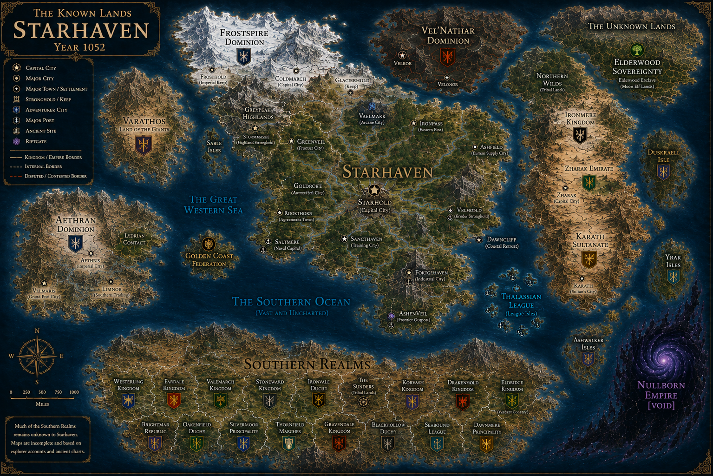

✦ Starhaven Main Narrative · Chapters I–VIII
Main Story
The Official Chronicle — From the Boy Who Ran Through Fire
The core narrative of the Starhaven saga. Each chapter is a full standalone HTML page. Click any card to read.
✦ Short Stories · Filler Arcs · Historical Records
Chronicles
The Starhaven Royal Athenaeum — Archivist Senna Ash
Short stories, filler arcs, historical records, and battle accounts that exist outside the main numbered chapters. Add new entries in the CHRONICLES data array in the script.
✦ Character Encyclopedia · Year 1053
Characters
The Eleven · Commanders · Scholars · Allies
Every named character in the Starhaven saga. Click a card to expand. Edit the CHARACTERS array in the script to update any entry.
✦ Starhaven Military Registry · Year 1052
Army Registry
Complete Force Inventory — All Armies, Garrisons, Allies & Contractors
Every standing army, pillar force, specialized unit, and allied commitment under Starhaven's banner.
✦ Starhaven Atlas · Locations & Territories
Atlas
Cities, Fortresses, Districts, Frontier Outposts
The known world of Starhaven — every documented location, from the capital at Starhold to the frontier Void-watch stations.
✦ Starhaven Cartography Office
World Map
Scroll to zoom · Drag to pan · Use buttons to reset

✦ Starhaven Royal Museum · Historical Image Archive
Museum
Battle Scenes · Army Units · Locations · Historical Records
The visual archive — paintings, unit illustrations, location renderings, and historical scenes. Click any image to view full size. Subcategories will be added later.
✦ Ballads of Dren Solm · Ironvoice · Starhaven Musical Archive
Ballads
Every documented song — anthems, battle hymns, personal ballads
The complete musical archive. Click ▶ to play any track. The player bar at the bottom shows the currently playing piece.